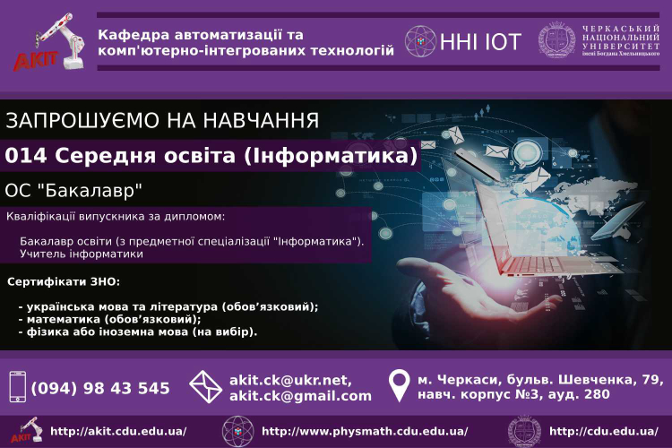

Черкаський Національний Університет ім. Богдана Хмельницького
Кафедра АКІТ ЧНУ ім. Б. Хмельницького

Середня освіта інформатика.
Для вступу необхідні сертифікати ЗНО: українська мова та література (обов’язковий); математика (обов’язковий); фізика або іноземна мова (на вибір). Підготовка здобувачів вищої освіти за спеціальністю «014 Середня освіта (Інформатика)» спрямована на формування у них фахових компетентностей щодо програмування; проектування, створення та підтримки найрізноманітніших інформаційних систем; використання сучасних інформаційних технологій, новітніх методик у проектуванні та провадженні освітньої діяльності.